Chapter 16 Sampling in R
16.1 Introduction to Sampling
16.1.1 Sampling & point estimates
Population vs. sample
The population is the complete dataset.
It doesn’t have to refer to people.
You typically don’t know what the whole population is.
The sample is the subset of data you calculate on.
Base-R sampling
slice_sample(df, n = num of sampling): for data framessample(vec, size = num of sampling): for vectors
Population parameters vs. point estimates
A population parameter is a calculation made on the population dataset.
A point estimate or sample statistic is a calculation made on the sample dataset.
16.1.1.1 Simple sampling with dplyr
you’ll be exploring song data from Spotify. Each row of the dataset represents a song. Columns include the name of the song, the artists who performed it, the release year, and attributes of the song like its duration, tempo, and danceability.
library(tidyverse)
library(fst)
spotify_population <- read_fst("data/spotify_2000_2020.fst")
# View the whole population dataset
glimpse(spotify_population)## Rows: 41,656
## Columns: 20
## $ acousticness <dbl> 0.9720000, 0.3210000, 0.0065900, 0.0039000, 0.1220000…
## $ artists <chr> "['David Bauer']", "['Etta James']", "['Quasimoto']",…
## $ danceability <dbl> 0.567, 0.821, 0.706, 0.368, 0.501, 0.829, 0.352, 0.97…
## $ duration_ms <dbl> 313293, 360240, 202507, 173360, 344200, 195293, 17477…
## $ duration_minutes <dbl> 5.222, 6.004, 3.375, 2.889, 5.737, 3.255, 2.913, 0.94…
## $ energy <dbl> 0.2270, 0.4180, 0.6020, 0.9770, 0.5110, 0.6140, 0.985…
## $ explicit <dbl> 0, 0, 1, 0, 0, 1, 0, 0, 0, 0, 0, 0, 0, 0, 0, 0, 0, 0,…
## $ id <chr> "0w0D8H1ubRerCXHWYJkinO", "4JVeqfE2tpi7Pv63LJZtPh", "…
## $ instrumentalness <dbl> 0.60100000, 0.00037200, 0.00013800, 0.00000000, 0.000…
## $ key <dbl> 10, 9, 11, 11, 7, 1, 2, 7, 8, 4, 9, 1, 10, 8, 2, 10, …
## $ liveness <dbl> 0.1100, 0.2220, 0.4000, 0.3500, 0.2790, 0.0975, 0.367…
## $ loudness <dbl> -13.44, -9.84, -8.31, -2.76, -9.84, -8.55, -2.56, -8.…
## $ mode <dbl> 1, 0, 0, 0, 0, 1, 1, 1, 1, 0, 0, 1, 1, 1, 1, 0, 1, 0,…
## $ name <chr> "Shout to the Lord", "Miss You", "Real Eyes", "Pengui…
## $ popularity <dbl> 47, 51, 44, 52, 53, 46, 40, 39, 41, 47, 39, 42, 52, 3…
## $ release_date <chr> "2000", "2000-12-12", "2000-06-13", "2000-02-22", "20…
## $ speechiness <dbl> 0.0290, 0.0407, 0.3420, 0.1270, 0.0291, 0.2670, 0.220…
## $ tempo <dbl> 136.1, 117.4, 89.7, 165.9, 78.0, 90.9, 130.0, 114.0, …
## $ valence <dbl> 0.0396, 0.8030, 0.4790, 0.5480, 0.1130, 0.4960, 0.241…
## $ year <dbl> 2000, 2000, 2000, 2000, 2000, 2000, 2000, 2000, 2000,…Here, sample the song dataset and compare a calculation on the whole population and on a sample.
# Sample 1000 rows from spotify_population
spotify_sample <- slice_sample(spotify_population, n = 1000)
# See the result
glimpse(spotify_sample)## Rows: 1,000
## Columns: 20
## $ acousticness <dbl> 0.033100, 0.073400, 0.775000, 0.641000, 0.206000, 0.0…
## $ artists <chr> "['Aloe Blacc']", "['One Direction']", "['Bo Burnham'…
## $ danceability <dbl> 0.308, 0.678, 0.338, 0.207, 0.884, 0.463, 0.292, 0.91…
## $ duration_ms <dbl> 254880, 214720, 261222, 147787, 236501, 103280, 22040…
## $ duration_minutes <dbl> 4.25, 3.58, 4.35, 2.46, 3.94, 1.72, 3.67, 4.47, 3.44,…
## $ energy <dbl> 0.769, 0.933, 0.478, 0.256, 0.936, 0.881, 0.678, 0.64…
## $ explicit <dbl> 0, 0, 1, 0, 1, 0, 1, 0, 0, 0, 0, 0, 0, 0, 1, 0, 0, 1,…
## $ id <chr> "2stPxcgjdSImK7Gizl8ZUN", "6AzCBeiDuUXGXjznBufswB", "…
## $ instrumentalness <dbl> 0.00000000, 0.00000000, 0.00000000, 0.95900000, 0.000…
## $ key <dbl> 11, 2, 0, 9, 1, 3, 10, 1, 1, 5, 7, 0, 8, 6, 0, 6, 11,…
## $ liveness <dbl> 0.2140, 0.0863, 0.7370, 0.0893, 0.2620, 0.0406, 0.146…
## $ loudness <dbl> -7.26, -4.96, -5.89, -13.38, -3.93, -7.13, -5.59, -7.…
## $ mode <dbl> 0, 1, 1, 1, 1, 0, 1, 1, 0, 1, 0, 1, 1, 1, 1, 0, 0, 1,…
## $ name <chr> "The Man", "Stockholm Syndrome", "From God's Perspect…
## $ popularity <dbl> 59, 69, 53, 49, 73, 46, 61, 42, 59, 64, 6, 57, 59, 61…
## $ release_date <chr> "2014-01-01", "2014-11-17", "2013-12-17", "2007-11-20…
## $ speechiness <dbl> 0.0650, 0.1400, 0.0404, 0.0401, 0.1670, 0.3270, 0.072…
## $ tempo <dbl> 81.9, 120.6, 86.9, 125.7, 120.0, 160.1, 87.4, 97.7, 1…
## $ valence <dbl> 0.4880, 0.3360, 0.3570, 0.0905, 0.7580, 0.3660, 0.365…
## $ year <dbl> 2014, 2014, 2013, 2007, 2020, 2001, 2015, 2001, 2006,…Notice that the mean duration of songs in the sample is similar, but not identical to the mean duration of songs in the whole population.
# Calculate the mean duration in mins from spotify_population
mean_dur_pop <- spotify_population %>%
summarise(mean_dur_pop = mean(duration_minutes))
# Calculate the mean duration in mins from spotify_sample
mean_dur_samp <- spotify_sample %>%
summarise(mean_dur_samp = mean(duration_minutes))
# See the results
cbind(mean_dur_pop, mean_dur_samp)## mean_dur_pop mean_dur_samp
## 1 3.85 3.8816.1.1.2 Simple sampling with base-R
Let’s look at the loudness property of each song.
# Get the loudness column of spotify_population
loudness_pop <- spotify_population$loudness
# Sample 100 values of loudness_pop
loudness_samp <- sample(loudness_pop, size = 100)
# See the results
loudness_samp## [1] -5.48 -4.80 -11.30 -5.04 -12.78 -9.04 -10.52 -4.82 -5.74 -6.16
## [11] -6.99 -8.03 -4.49 -9.75 -7.42 -4.87 -13.49 -6.48 -3.42 -8.39
## [21] -3.74 -16.54 -6.19 -5.29 -4.62 -5.42 -4.11 -6.46 -4.64 -7.46
## [31] -6.76 -5.59 -4.37 -5.18 -3.31 -4.00 -4.77 -3.74 -3.81 -9.32
## [41] -5.77 -11.45 -7.34 -8.83 -6.65 -8.74 -7.36 -9.98 -8.93 -5.86
## [51] -6.08 -8.88 -4.83 -4.55 -5.35 -4.40 -8.02 -4.62 -5.86 -3.93
## [61] -3.19 -6.97 -5.54 -9.31 -3.89 -4.61 -9.51 -5.44 -9.47 -13.16
## [71] -4.74 -5.73 -2.24 -9.53 -10.45 -8.32 -3.71 -4.82 -7.90 -3.71
## [81] -3.71 -14.57 -6.73 -6.97 -7.02 -9.46 -4.01 -7.51 -4.49 -7.73
## [91] -6.59 -3.47 -5.60 -13.34 -7.35 -6.74 -4.31 -2.83 -3.40 -4.14Again, notice that the calculated value (the standard deviation) is close but not identical in each case.
# Calculate the standard deviation of loudness_pop
sd_loudness_pop <- sd(loudness_pop)
# Calculate the standard deviation of loudness_samp
sd_loudness_samp <- sd(loudness_samp)
# See the results
c(sd_loudness_pop, sd_loudness_samp)## [1] 4.52 2.8216.1.2 Convenience sampling
Sample not representative of population, causing sample bias.
Collecting data by the easiest method is called convenience sampling.
Visualizing selection bias with histogram.
16.1.2.1 Generalizable
Visualizing the distributions of the population and the sample can help determine whether or not the sample is representative of the population.
The Spotify dataset contains a column named acousticness, which is a confidence measure from zero to one of whether the track is acoustic, that is, it was made with instruments that aren’t plugged in.
# Visualize the distribution of acousticness as a histogram with a binwidth of 0.01
ggplot(spotify_population, aes(x = acousticness)) +
geom_histogram(binwidth = 0.01)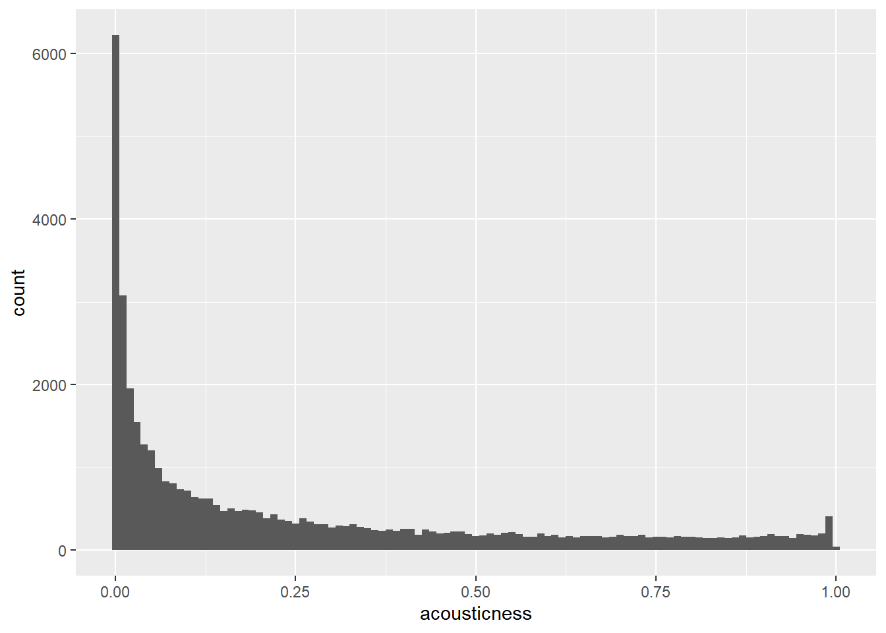
# sampling
spotify_mysterious_sample <- slice_max(spotify_population, order_by = acousticness, n = 1107)
# Update the histogram to use spotify_mysterious_sample with x-axis limits from 0 to 1
ggplot(spotify_mysterious_sample, aes(acousticness)) +
geom_histogram(binwidth = 0.01) +
xlim(0, 1)## Warning: Removed 2 rows containing missing values
## (`geom_bar()`).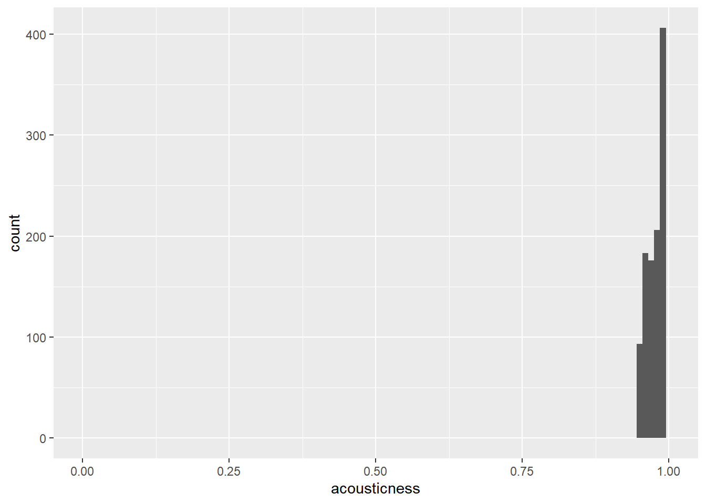
The acousticness values in the sample are all greater than 0.95, whereas they range from 0 to 1 in the whole population.
Let’s look at another sample to see if it is representative of the population. This time, you’ll look at the duration_minutes column of the Spotify datasets.
# Visualize the distribution of duration_minutes as a histogram with a binwidth of 0.5
ggplot(spotify_population, aes(duration_minutes)) +
geom_histogram(binwidth = 0.5) +
xlim(0, 15)## Warning: Removed 28 rows containing non-finite values
## (`stat_bin()`).## Warning: Removed 2 rows containing missing values
## (`geom_bar()`).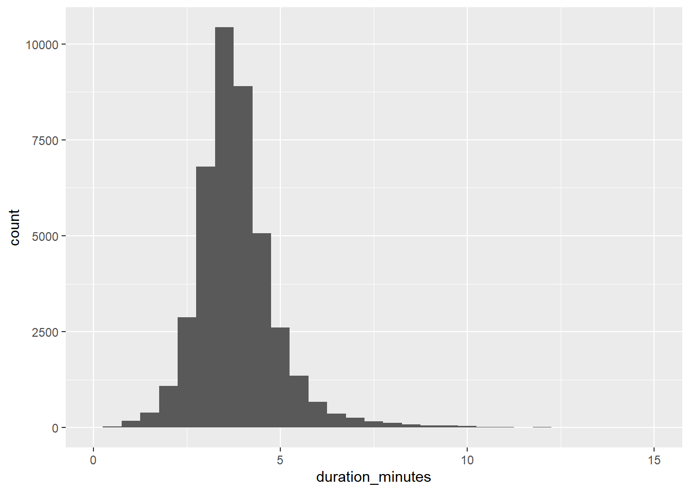
spotify_mysterious_sample2 <- slice_sample(spotify_population, n = 50)
# Update the histogram to use spotify_mysterious_sample2 with x-axis limits from 0 to 15
ggplot(spotify_mysterious_sample2, aes(duration_minutes)) +
geom_histogram(binwidth = 0.01) +
xlim(0, 15)## Warning: Removed 2 rows containing missing values
## (`geom_bar()`).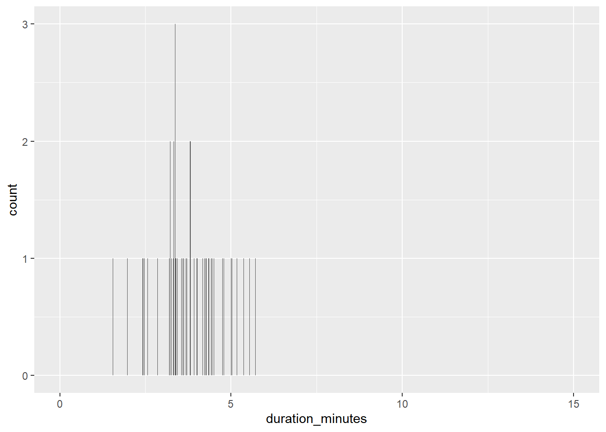
The duration values in the sample show a similar distribution to those in the whole population, so the results are generalizable.
16.1.3 Pseudo-random number generation
Next “random” number calculated from previous “random” number.
The first “random” number calculated from a seed.
If you start from the same seed value, all future random numbers will be the same.
Random number generating functions

16.1.3.1 Generating random numbers
A related task is to generate random numbers that follow a statistical distribution, like the uniform distribution or the normal distribution.
Each random number generation function has a name beginning with “r”. It’s first argument is the number of numbers to generate, but other arguments are distribution-specific.
n_numbers <- 5000
# see what arguments you need to pass to those functions
args(runif)## function (n, min = 0, max = 1)
## NULLargs(rnorm)## function (n, mean = 0, sd = 1)
## NULLComplete the data frame of random numbers.
# Generate random numbers from ...
randoms <- data.frame(
# a uniform distribution from -3 to 3
uniform = runif(n_numbers, min = -3, max = 3),
# a normal distribution with mean 5 and sd 2
normal = rnorm(n_numbers, 5, 2)
)# Plot a histogram of uniform values, binwidth 0.25
ggplot(randoms, aes(x = uniform)) +
geom_histogram(binwidth = 0.25)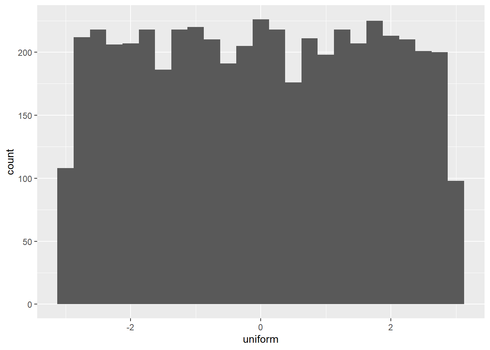
# Plot a histogram of normal values, binwidth 0.5
ggplot(randoms, aes(x = normal)) +
geom_histogram(binwidth = 0.5)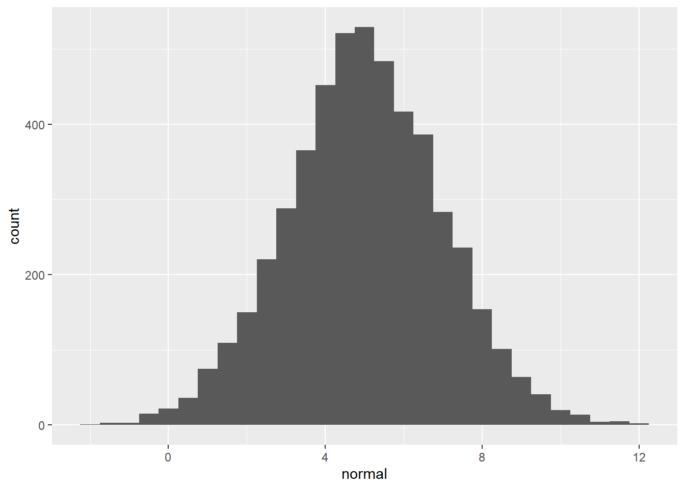
16.1.3.2 Random seeds
Setting the seed to R’s random number generator helps avoid different output every time by making the random number generation reproducible.
# different value
set.seed(123)
list(r1 = rnorm(5), r2 = rnorm(5))## $r1
## [1] -0.5605 -0.2302 1.5587 0.0705 0.1293
##
## $r2
## [1] 1.715 0.461 -1.265 -0.687 -0.446# same value
set.seed(123)
r1 <- rnorm(5)
set.seed(123)
r2 <- rnorm(5)
list(r1 = r1, r2 = r2)## $r1
## [1] -0.5605 -0.2302 1.5587 0.0705 0.1293
##
## $r2
## [1] -0.5605 -0.2302 1.5587 0.0705 0.1293# different value
set.seed(123)
r1 <- rnorm(5)
set.seed(456)
r2 <- rnorm(5)
list(r1 = r1, r2 = r2)## $r1
## [1] -0.5605 -0.2302 1.5587 0.0705 0.1293
##
## $r2
## [1] -1.344 0.622 0.801 -1.389 -0.714# same value
set.seed(123)
r1 <- c(rnorm(5), rnorm(5))
set.seed(123)
r2 <- rnorm(10)
list(r1 = r1, r2 = r2)## $r1
## [1] -0.5605 -0.2302 1.5587 0.0705 0.1293 1.7151 0.4609 -1.2651 -0.6869
## [10] -0.4457
##
## $r2
## [1] -0.5605 -0.2302 1.5587 0.0705 0.1293 1.7151 0.4609 -1.2651 -0.6869
## [10] -0.4457Setting the seed to a particular value means that subsequent random code that generates random numbers will have the same answer each time you run it.
16.2 Sampling Methods
16.2.1 Simple random & systematic sampling
16.2.1.1 Simple random sampling
Simple random sampling (sometimes abbreviated to “SRS”), involves picking rows at random, one at a time, where each row has the same chance of being picked as any other.
To make it easier to see which rows end up in the sample, it’s helpful to include a row ID column (rowid_to_column()) in the dataset before you take the sample.
We’ll look at a synthetic (fictional) employee attrition dataset from IBM, where “attrition” means leaving the company.
attrition_pop <- read_fst("data/attrition.fst")
glimpse(attrition_pop)## Rows: 1,470
## Columns: 31
## $ Age <int> 21, 19, 18, 18, 18, 27, 18, 18, 18, 18, 18, 3…
## $ Attrition <fct> No, Yes, Yes, No, Yes, No, No, Yes, No, Yes, …
## $ BusinessTravel <fct> Travel_Rarely, Travel_Rarely, Travel_Rarely, …
## $ DailyRate <int> 391, 528, 230, 812, 1306, 443, 287, 247, 1124…
## $ Department <fct> Research_Development, Sales, Research_Develop…
## $ DistanceFromHome <int> 15, 22, 3, 10, 5, 3, 5, 8, 1, 3, 14, 24, 16, …
## $ Education <ord> College, Below_College, Bachelor, Bachelor, B…
## $ EducationField <fct> Life_Sciences, Marketing, Life_Sciences, Medi…
## $ EnvironmentSatisfaction <ord> High, Very_High, High, Very_High, Medium, Ver…
## $ Gender <fct> Male, Male, Male, Female, Male, Male, Male, M…
## $ HourlyRate <int> 96, 50, 54, 69, 69, 50, 73, 80, 97, 70, 33, 6…
## $ JobInvolvement <ord> High, High, High, Medium, High, High, High, H…
## $ JobLevel <int> 1, 1, 1, 1, 1, 1, 1, 1, 1, 1, 1, 1, 1, 1, 1, …
## $ JobRole <fct> Research_Scientist, Sales_Representative, Lab…
## $ JobSatisfaction <ord> Very_High, High, High, High, Medium, Very_Hig…
## $ MaritalStatus <fct> Single, Single, Single, Single, Single, Marri…
## $ MonthlyIncome <int> 1232, 1675, 1420, 1200, 1878, 1706, 1051, 190…
## $ MonthlyRate <int> 19281, 26820, 25233, 9724, 8059, 16571, 13493…
## $ NumCompaniesWorked <int> 1, 1, 1, 1, 1, 1, 1, 1, 1, 1, 1, 1, 1, 1, 1, …
## $ OverTime <fct> No, Yes, No, No, Yes, No, No, No, No, Yes, No…
## $ PercentSalaryHike <int> 14, 19, 13, 12, 14, 11, 15, 12, 15, 12, 16, 2…
## $ PerformanceRating <ord> Excellent, Excellent, Excellent, Excellent, E…
## $ RelationshipSatisfaction <ord> Very_High, Very_High, High, Low, Very_High, H…
## $ StockOptionLevel <int> 0, 0, 0, 0, 0, 3, 0, 0, 0, 0, 0, 1, 2, 1, 1, …
## $ TotalWorkingYears <int> 0, 0, 0, 0, 0, 0, 0, 0, 0, 0, 0, 1, 1, 1, 1, …
## $ TrainingTimesLastYear <int> 6, 2, 2, 2, 3, 6, 2, 0, 5, 2, 4, 2, 2, 3, 6, …
## $ WorkLifeBalance <ord> Better, Good, Better, Better, Better, Good, B…
## $ YearsAtCompany <int> 0, 0, 0, 0, 0, 0, 0, 0, 0, 0, 0, 1, 1, 1, 1, …
## $ YearsInCurrentRole <int> 0, 0, 0, 0, 0, 0, 0, 0, 0, 0, 0, 0, 0, 0, 0, …
## $ YearsSinceLastPromotion <int> 0, 0, 0, 0, 0, 0, 0, 0, 0, 0, 0, 0, 0, 0, 0, …
## $ YearsWithCurrManager <int> 0, 0, 0, 0, 0, 0, 0, 0, 0, 0, 0, 0, 0, 0, 0, …Add a row ID column to the dataset, then use simple random sampling to get 200 rows.
# Set the seed
set.seed(5643)
attrition_samp <- attrition_pop %>%
# Add a row ID column
rowid_to_column() %>%
# Get 200 rows using simple random sampling
slice_sample(n = 200)
# View the attrition_samp dataset
glimpse(attrition_samp)## Rows: 200
## Columns: 32
## $ rowid <int> 870, 1186, 151, 988, 631, 1351, 1279, 521, 13…
## $ Age <int> 45, 51, 31, 35, 46, 52, 41, 38, 52, 32, 48, 4…
## $ Attrition <fct> No, Yes, No, No, Yes, No, No, No, No, No, Yes…
## $ BusinessTravel <fct> Travel_Rarely, Travel_Frequently, Travel_Freq…
## $ DailyRate <int> 1015, 1150, 793, 882, 669, 322, 840, 1444, 31…
## $ Department <fct> Research_Development, Research_Development, S…
## $ DistanceFromHome <int> 5, 8, 20, 3, 9, 28, 9, 1, 3, 1, 1, 10, 1, 4, …
## $ Education <ord> Doctor, Master, Bachelor, Master, College, Co…
## $ EducationField <fct> Medical, Life_Sciences, Life_Sciences, Life_S…
## $ EnvironmentSatisfaction <ord> High, Low, High, Very_High, High, Very_High, …
## $ Gender <fct> Female, Male, Male, Male, Male, Female, Male,…
## $ HourlyRate <int> 50, 53, 67, 92, 64, 59, 64, 88, 39, 68, 98, 6…
## $ JobInvolvement <ord> Low, Low, Very_High, High, Medium, Very_High,…
## $ JobLevel <int> 2, 3, 1, 3, 3, 4, 5, 1, 3, 1, 3, 3, 1, 3, 3, …
## $ JobRole <fct> Laboratory_Technician, Manufacturing_Director…
## $ JobSatisfaction <ord> Low, Very_High, Very_High, Very_High, Very_Hi…
## $ MaritalStatus <fct> Single, Single, Married, Divorced, Single, Ma…
## $ MonthlyIncome <int> 5769, 10650, 2791, 7823, 9619, 13247, 19419, …
## $ MonthlyRate <int> 23447, 25150, 21981, 6812, 13596, 9731, 3735,…
## $ NumCompaniesWorked <int> 1, 2, 0, 6, 1, 2, 2, 0, 2, 0, 9, 5, 5, 1, 3, …
## $ OverTime <fct> Yes, No, No, No, No, Yes, No, Yes, Yes, No, Y…
## $ PercentSalaryHike <int> 14, 15, 12, 13, 16, 11, 17, 11, 14, 14, 13, 2…
## $ PerformanceRating <ord> Excellent, Excellent, Excellent, Excellent, E…
## $ RelationshipSatisfaction <ord> Low, Very_High, Low, Medium, Very_High, Mediu…
## $ StockOptionLevel <int> 0, 0, 1, 1, 0, 1, 1, 1, 0, 1, 0, 3, 1, 0, 1, …
## $ TotalWorkingYears <int> 10, 18, 3, 12, 9, 24, 21, 7, 28, 3, 23, 14, 7…
## $ TrainingTimesLastYear <int> 3, 2, 4, 2, 3, 3, 2, 2, 4, 2, 2, 2, 2, 2, 4, …
## $ WorkLifeBalance <ord> Better, Better, Better, Better, Better, Good,…
## $ YearsAtCompany <int> 10, 4, 2, 10, 9, 5, 18, 6, 5, 2, 1, 8, 5, 14,…
## $ YearsInCurrentRole <int> 7, 2, 2, 9, 8, 3, 16, 2, 4, 2, 0, 7, 4, 8, 6,…
## $ YearsSinceLastPromotion <int> 1, 0, 2, 0, 4, 0, 0, 1, 0, 2, 0, 0, 0, 9, 5, …
## $ YearsWithCurrManager <int> 4, 3, 2, 8, 7, 2, 11, 2, 4, 2, 0, 7, 2, 8, 17…Notice how the row IDs in the sampled dataset aren’t always increasing order. They are just random.
16.2.1.2 Systematic sampling
Systematic sampling avoids randomness. Here, you pick rows from the population at regular intervals.
For example, if the population dataset had 1000 rows and you wanted a sample size of 5, you’d pick rows 200, 400, 600, 800, and 1000. (1000 / 5 = 200 = interval)
# Set the sample size to 200
sample_size <- 200
# Get the population size from attrition_pop
pop_size <- nrow(attrition_pop)
# Calculate the interval between rows to be sampled
interval <- pop_size %/% sample_size; interval## [1] 7Get the row indexes for the sample as a numeric sequence of interval.
# Get row indexes for the sample
row_indexes <- seq_len(sample_size) * interval
str(row_indexes)## num [1:200] 7 14 21 28 35 42 49 56 63 70 ...# Systematically sample attrition_pop
attrition_sys_samp <- attrition_pop %>%
# Add a row ID column
rowid_to_column() %>%
# Get 200 rows using systematic sampling
# Get the rows of the population corresponding to row_indexes
dplyr::slice(row_indexes)
# See the result
glimpse(attrition_sys_samp)## Rows: 200
## Columns: 32
## $ rowid <int> 7, 14, 21, 28, 35, 42, 49, 56, 63, 70, 77, 84…
## $ Age <int> 18, 35, 22, 21, 20, 29, 19, 28, 19, 24, 32, 2…
## $ Attrition <fct> No, No, No, Yes, No, Yes, Yes, Yes, No, No, Y…
## $ BusinessTravel <fct> Non-Travel, Travel_Rarely, Travel_Rarely, Tra…
## $ DailyRate <int> 287, 464, 534, 156, 959, 805, 419, 1009, 265,…
## $ Department <fct> Research_Development, Research_Development, R…
## $ DistanceFromHome <int> 5, 4, 15, 12, 1, 1, 21, 1, 25, 13, 2, 3, 1, 9…
## $ Education <ord> College, College, Bachelor, Bachelor, Bachelo…
## $ EducationField <fct> Life_Sciences, Other, Medical, Life_Sciences,…
## $ EnvironmentSatisfaction <ord> Medium, High, Medium, High, Very_High, Medium…
## $ Gender <fct> Male, Male, Female, Female, Female, Female, M…
## $ HourlyRate <int> 73, 75, 59, 90, 83, 36, 37, 45, 57, 78, 95, 7…
## $ JobInvolvement <ord> High, High, High, Very_High, Medium, Medium, …
## $ JobLevel <int> 1, 1, 1, 1, 1, 1, 1, 1, 1, 1, 1, 1, 1, 1, 1, …
## $ JobRole <fct> Research_Scientist, Laboratory_Technician, La…
## $ JobSatisfaction <ord> Very_High, Very_High, Very_High, Medium, Medi…
## $ MaritalStatus <fct> Single, Divorced, Single, Single, Single, Mar…
## $ MonthlyIncome <int> 1051, 1951, 2871, 2716, 2836, 2319, 2121, 259…
## $ MonthlyRate <int> 13493, 10910, 23785, 25422, 11757, 6689, 9947…
## $ NumCompaniesWorked <int> 1, 1, 1, 1, 1, 1, 1, 1, 1, 1, 1, 1, 1, 1, 1, …
## $ OverTime <fct> No, No, No, No, No, Yes, Yes, No, Yes, No, No…
## $ PercentSalaryHike <int> 15, 12, 15, 15, 13, 11, 13, 15, 12, 13, 12, 1…
## $ PerformanceRating <ord> Excellent, Excellent, Excellent, Excellent, E…
## $ RelationshipSatisfaction <ord> Very_High, High, High, Very_High, Very_High, …
## $ StockOptionLevel <int> 0, 1, 0, 0, 0, 1, 0, 2, 0, 1, 0, 1, 3, 0, 0, …
## $ TotalWorkingYears <int> 0, 1, 1, 1, 1, 1, 1, 1, 1, 1, 1, 1, 1, 2, 2, …
## $ TrainingTimesLastYear <int> 2, 3, 5, 0, 0, 1, 3, 2, 2, 2, 2, 3, 2, 3, 3, …
## $ WorkLifeBalance <ord> Better, Better, Better, Better, Best, Better,…
## $ YearsAtCompany <int> 0, 1, 0, 1, 1, 1, 1, 1, 1, 1, 1, 1, 1, 2, 2, …
## $ YearsInCurrentRole <int> 0, 0, 0, 0, 0, 0, 0, 0, 0, 0, 0, 0, 1, 2, 2, …
## $ YearsSinceLastPromotion <int> 0, 0, 0, 0, 0, 0, 0, 0, 0, 0, 0, 0, 0, 2, 0, …
## $ YearsWithCurrManager <int> 0, 0, 0, 0, 0, 0, 0, 0, 1, 0, 0, 0, 0, 1, 2, …Systematic sampling avoids randomness by picking rows at regular intervals.
The trouble with systematic sampling
Systematic sampling has problems when the data are sorted or contain a pattern, then the resulting sample may not be representative of the whole population.
The problem can be solved by shuffling the rows, but then systematic sampling is equivalent to simple random sampling.
# Add a row ID column to attrition_pop
attrition_pop_id <- attrition_pop %>%
rowid_to_column()
# Using attrition_pop_id, plot YearsAtCompany vs. rowid
ggplot(attrition_pop_id, aes(rowid, YearsAtCompany)) +
# Make it a scatter plot
geom_point() +
# Add a smooth trend line
geom_smooth(se = F)## `geom_smooth()` using method = 'gam' and
## formula = 'y ~ s(x, bs = "cs")'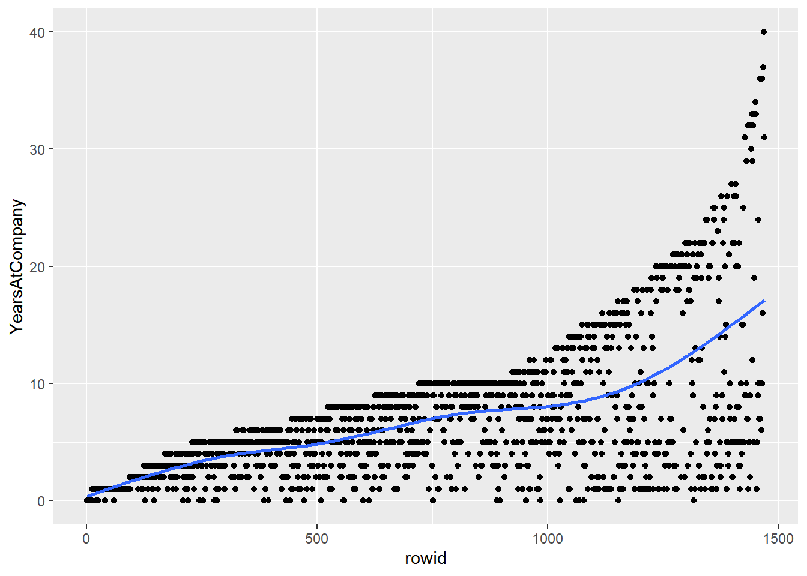
Shuffle the rows of attrition_pop, by slice_sample(prop = 1)
# Shuffle the rows of attrition_pop then add row IDs
attrition_shuffled <- attrition_pop %>%
slice_sample(prop = 1) %>%
rowid_to_column()
# Using attrition_shuffled, plot YearsAtCompany vs. rowid
# Add points and a smooth trend line
ggplot(attrition_shuffled, aes(rowid, YearsAtCompany)) +
geom_point() +
geom_smooth(se = F)## `geom_smooth()` using method = 'gam' and
## formula = 'y ~ s(x, bs = "cs")'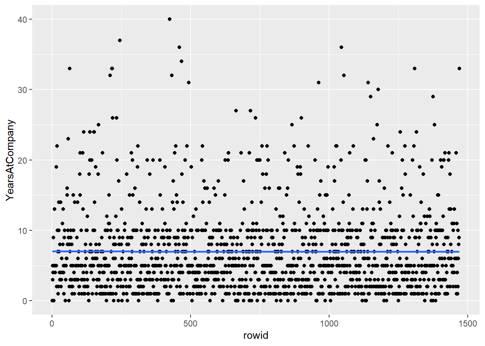
Shu+ing rows + systematic sampling is the same as simple random sampling.
16.2.2 Stratified & weighted random sampling
Stratified sampling is useful if you care about subgroups. Otherwise, simple random sampling is more appropriate.
16.2.2.1 Proportional stratified sampling
If you are interested in subgroups within the population, then you may need to carefully control the counts of each subgroup within the population.
Proportional stratified sampling results in subgroup sizes within the sample that are representative of the subgroup sizes within the population.
education_counts_pop <- attrition_pop %>%
# Count the employees by Education level, sorting by n
count(Education, sort = T) %>%
# Add a percent column
mutate(percent = (n / sum(n)) * 100)
# See the results
education_counts_pop## Education n percent
## 1 Bachelor 572 38.91
## 2 Master 398 27.07
## 3 College 282 19.18
## 4 Below_College 170 11.56
## 5 Doctor 48 3.27# Use proportional stratified sampling to get 40% of each Education group
attrition_strat <- attrition_pop %>%
group_by(Education) %>%
slice_sample(prop = 0.4) %>%
# Make sure to Ungroup the stratified sample
ungroup()
# See the result
glimpse(attrition_strat)## Rows: 586
## Columns: 31
## $ Age <int> 37, 29, 33, 39, 47, 27, 29, 26, 24, 46, 23, 2…
## $ Attrition <fct> No, Yes, No, No, No, Yes, No, No, No, No, Yes…
## $ BusinessTravel <fct> Travel_Rarely, Travel_Frequently, Travel_Rare…
## $ DailyRate <int> 1439, 337, 461, 116, 1309, 1420, 352, 683, 14…
## $ Department <fct> Research_Development, Research_Development, R…
## $ DistanceFromHome <int> 4, 14, 13, 24, 4, 2, 6, 2, 4, 18, 8, 26, 10, …
## $ Education <ord> Below_College, Below_College, Below_College, …
## $ EducationField <fct> Life_Sciences, Other, Life_Sciences, Life_Sci…
## $ EnvironmentSatisfaction <ord> High, High, Medium, Low, Medium, High, Very_H…
## $ Gender <fct> Male, Female, Female, Male, Male, Male, Male,…
## $ HourlyRate <int> 54, 84, 53, 52, 99, 85, 87, 36, 42, 86, 93, 8…
## $ JobInvolvement <ord> High, High, High, High, High, High, Medium, M…
## $ JobLevel <int> 1, 3, 1, 2, 2, 1, 1, 1, 2, 3, 1, 1, 2, 1, 1, …
## $ JobRole <fct> Research_Scientist, Healthcare_Representative…
## $ JobSatisfaction <ord> High, Very_High, Very_High, Very_High, High, …
## $ MaritalStatus <fct> Married, Single, Single, Single, Single, Divo…
## $ MonthlyIncome <int> 2996, 7553, 3452, 4108, 2976, 3041, 2804, 390…
## $ MonthlyRate <int> 5182, 22930, 17241, 5340, 25751, 16346, 15434…
## $ NumCompaniesWorked <int> 7, 0, 3, 7, 3, 0, 1, 0, 1, 5, 1, 1, 1, 0, 1, …
## $ OverTime <fct> Yes, Yes, No, No, No, No, No, No, Yes, No, Ye…
## $ PercentSalaryHike <int> 15, 12, 18, 13, 19, 11, 11, 12, 12, 11, 11, 1…
## $ PerformanceRating <ord> Excellent, Excellent, Excellent, Excellent, E…
## $ RelationshipSatisfaction <ord> Very_High, Low, Low, Low, Low, Medium, Very_H…
## $ StockOptionLevel <int> 0, 0, 0, 0, 0, 1, 0, 0, 2, 0, 0, 2, 2, 0, 1, …
## $ TotalWorkingYears <int> 8, 9, 5, 18, 5, 5, 1, 5, 5, 28, 5, 4, 7, 4, 1…
## $ TrainingTimesLastYear <int> 2, 1, 4, 2, 3, 3, 3, 2, 3, 3, 2, 2, 2, 3, 5, …
## $ WorkLifeBalance <ord> Better, Better, Better, Better, Better, Bette…
## $ YearsAtCompany <int> 6, 8, 3, 7, 0, 4, 1, 4, 5, 2, 5, 4, 7, 3, 10,…
## $ YearsInCurrentRole <int> 4, 7, 2, 7, 0, 3, 0, 3, 4, 2, 4, 2, 7, 2, 8, …
## $ YearsSinceLastPromotion <int> 1, 7, 0, 1, 0, 0, 0, 1, 0, 1, 1, 0, 1, 2, 0, …
## $ YearsWithCurrManager <int> 3, 7, 2, 7, 0, 2, 0, 1, 3, 2, 2, 2, 7, 2, 8, …# Get the counts and percents from attrition_strat
education_counts_strat <- attrition_strat %>%
count(Education, sort = T) %>%
mutate(percent = n / sum(n) * 100)
# See the results
education_counts_strat## # A tibble: 5 × 3
## Education n percent
## <ord> <int> <dbl>
## 1 Bachelor 228 38.9
## 2 Master 159 27.1
## 3 College 112 19.1
## 4 Below_College 68 11.6
## 5 Doctor 19 3.24By grouping then sampling, the size of each group in the sample is representative of the size of the sample in the population.
16.2.2.2 Equal counts stratified sampling
If one subgroup is larger than another subgroup in the population, but you don’t want to reflect that difference in your analysis, then you can use equal counts stratified sampling to generate samples where each subgroup has the same amount of data.
# Use equal counts stratified sampling to get 30 employees from each Education group
attrition_eq <- attrition_pop %>%
group_by(Education) %>%
slice_sample(n = 30) %>%
ungroup()
# See the results
str(attrition_eq)## tibble [150 × 31] (S3: tbl_df/tbl/data.frame)
## $ Age : int [1:150] 36 25 26 19 22 33 32 29 21 30 ...
## $ Attrition : Factor w/ 2 levels "No","Yes": 2 1 1 2 2 1 1 1 1 1 ...
## $ BusinessTravel : Factor w/ 3 levels "Non-Travel","Travel_Frequently",..: 3 3 3 3 3 1 3 3 3 1 ...
## $ DailyRate : int [1:150] 530 977 683 528 391 1038 499 441 501 829 ...
## $ Department : Factor w/ 3 levels "Human_Resources",..: 3 2 2 3 2 3 3 2 3 2 ...
## $ DistanceFromHome : int [1:150] 3 2 2 22 7 8 2 8 5 1 ...
## $ Education : Ord.factor w/ 5 levels "Below_College"<..: 1 1 1 1 1 1 1 1 1 1 ...
## $ EducationField : Factor w/ 6 levels "Human_Resources",..: 2 5 4 3 2 2 3 5 4 2 ...
## $ EnvironmentSatisfaction : Ord.factor w/ 4 levels "Low"<"Medium"<..: 3 4 1 4 4 2 3 3 3 3 ...
## $ Gender : Factor w/ 2 levels "Female","Male": 2 2 2 2 2 1 2 1 2 2 ...
## $ HourlyRate : int [1:150] 51 57 36 50 75 88 36 39 58 88 ...
## $ JobInvolvement : Ord.factor w/ 4 levels "Low"<"Medium"<..: 2 3 2 3 3 2 3 1 3 2 ...
## $ JobLevel : int [1:150] 3 1 1 1 1 1 2 2 1 3 ...
## $ JobRole : Factor w/ 9 levels "Healthcare_Representative",..: 8 3 7 9 7 9 8 1 9 5 ...
## $ JobSatisfaction : Ord.factor w/ 4 levels "Low"<"Medium"<..: 4 3 4 3 2 4 2 1 1 3 ...
## $ MaritalStatus : Factor w/ 3 levels "Divorced","Married",..: 2 1 3 3 3 3 2 2 3 3 ...
## $ MonthlyIncome : int [1:150] 10325 3977 3904 1675 2472 2342 4078 9715 2380 8474 ...
## $ MonthlyRate : int [1:150] 5518 7298 4050 26820 26092 21437 20497 7288 25479 20925 ...
## $ NumCompaniesWorked : int [1:150] 1 6 0 1 1 0 0 3 1 1 ...
## $ OverTime : Factor w/ 2 levels "No","Yes": 2 2 1 2 2 1 2 1 2 1 ...
## $ PercentSalaryHike : int [1:150] 11 19 12 19 23 19 13 13 11 22 ...
## $ PerformanceRating : Ord.factor w/ 4 levels "Low"<"Good"<"Excellent"<..: 3 3 3 3 4 3 3 3 3 4 ...
## $ RelationshipSatisfaction: Ord.factor w/ 4 levels "Low"<"Medium"<..: 1 3 4 4 1 4 1 3 4 3 ...
## $ StockOptionLevel : int [1:150] 1 1 0 0 0 0 3 1 0 0 ...
## $ TotalWorkingYears : int [1:150] 16 7 5 0 1 3 4 9 2 12 ...
## $ TrainingTimesLastYear : int [1:150] 6 2 2 2 2 2 3 3 6 2 ...
## $ WorkLifeBalance : Ord.factor w/ 4 levels "Bad"<"Good"<"Better"<..: 3 2 3 2 3 2 2 3 3 3 ...
## $ YearsAtCompany : int [1:150] 16 2 4 0 1 2 3 7 2 11 ...
## $ YearsInCurrentRole : int [1:150] 7 2 3 0 0 2 2 7 2 8 ...
## $ YearsSinceLastPromotion : int [1:150] 3 0 1 0 0 2 1 0 1 5 ...
## $ YearsWithCurrManager : int [1:150] 7 2 1 0 0 2 2 7 2 8 ...# Get the counts and percents from attrition_eq
education_counts_eq <- attrition_eq %>%
count(Education, sort = T) %>%
mutate(percent = n / sum(n) * 100)
# See the results
education_counts_eq## # A tibble: 5 × 3
## Education n percent
## <ord> <int> <dbl>
## 1 Below_College 30 20
## 2 College 30 20
## 3 Bachelor 30 20
## 4 Master 30 20
## 5 Doctor 30 20If you want each subgroup to have equal weight in your analysis, then equal counts stratified sampling is the appropriate technique.
16.2.2.3 Weighted sampling
Weighted sampling, which lets you specify rules about the probability of picking rows at the row level. The probability of picking any given row is proportional to the weight value for that row.
# Using attrition_pop, plot YearsAtCompany as a histogram with binwidth 1
ggplot(attrition_pop, aes(x = YearsAtCompany)) +
geom_histogram(binwidth = 1) +
geom_vline(xintercept = mean(attrition_pop$YearsAtCompany),
color = "red",
linetype = "dotted") +
annotate(
"text",
x = 15, y = 175,
label = paste("mean = ", mean(attrition_pop$YearsAtCompany), sep = ""),
vjust = 1, size = 4, color = "grey40"
)
# Sample 400 employees weighted by YearsAtCompany
attrition_weight <- attrition_pop %>%
slice_sample(n = 400, weight_by = YearsAtCompany)
# See the results
glimpse(attrition_weight)## Rows: 400
## Columns: 31
## $ Age <int> 30, 40, 31, 32, 40, 58, 26, 36, 28, 30, 42, 4…
## $ Attrition <fct> No, No, No, No, No, Yes, Yes, No, No, No, No,…
## $ BusinessTravel <fct> Travel_Rarely, Travel_Rarely, Travel_Rarely, …
## $ DailyRate <int> 438, 1398, 746, 117, 898, 147, 575, 301, 950,…
## $ Department <fct> Research_Development, Sales, Research_Develop…
## $ DistanceFromHome <int> 18, 2, 8, 13, 6, 23, 3, 15, 3, 9, 2, 26, 1, 2…
## $ Education <ord> Bachelor, Master, Master, Master, College, Ma…
## $ EducationField <fct> Life_Sciences, Life_Sciences, Life_Sciences, …
## $ EnvironmentSatisfaction <ord> Low, High, High, Medium, High, Very_High, Hig…
## $ Gender <fct> Female, Female, Female, Male, Male, Female, M…
## $ HourlyRate <int> 75, 79, 61, 73, 38, 94, 73, 88, 93, 48, 35, 5…
## $ JobInvolvement <ord> High, High, High, High, High, High, High, Low…
## $ JobLevel <int> 1, 5, 2, 2, 4, 3, 1, 2, 3, 2, 4, 2, 4, 2, 5, …
## $ JobRole <fct> Research_Scientist, Manager, Manufacturing_Di…
## $ JobSatisfaction <ord> High, High, Very_High, Very_High, Very_High, …
## $ MaritalStatus <fct> Single, Married, Single, Divorced, Single, Ma…
## $ MonthlyIncome <int> 2632, 18041, 4424, 4403, 16437, 10312, 3102, …
## $ MonthlyRate <int> 23910, 13022, 20682, 9250, 17381, 3465, 6582,…
## $ NumCompaniesWorked <int> 1, 0, 1, 2, 1, 1, 0, 1, 0, 0, 0, 1, 1, 1, 1, …
## $ OverTime <fct> No, No, No, No, Yes, No, No, No, No, Yes, No,…
## $ PercentSalaryHike <int> 14, 14, 23, 11, 21, 12, 22, 24, 17, 19, 17, 1…
## $ PerformanceRating <ord> Excellent, Excellent, Outstanding, Excellent,…
## $ RelationshipSatisfaction <ord> High, Very_High, Very_High, High, Very_High, …
## $ StockOptionLevel <int> 0, 0, 0, 1, 0, 1, 0, 1, 3, 0, 1, 1, 1, 1, 1, …
## $ TotalWorkingYears <int> 5, 21, 11, 8, 21, 40, 7, 15, 10, 12, 23, 10, …
## $ TrainingTimesLastYear <int> 4, 2, 2, 3, 2, 3, 2, 4, 3, 2, 3, 2, 3, 3, 3, …
## $ WorkLifeBalance <ord> Good, Better, Better, Good, Better, Good, Bet…
## $ YearsAtCompany <int> 5, 20, 11, 5, 21, 40, 6, 15, 9, 11, 22, 10, 2…
## $ YearsInCurrentRole <int> 4, 15, 7, 2, 7, 10, 4, 12, 7, 9, 6, 7, 3, 9, …
## $ YearsSinceLastPromotion <int> 0, 1, 1, 0, 7, 15, 0, 11, 1, 4, 13, 4, 11, 8,…
## $ YearsWithCurrManager <int> 4, 12, 8, 3, 7, 6, 4, 11, 7, 7, 7, 5, 11, 8, …# Using attrition_weight, plot YearsAtCompany as a histogram with binwidth 1
ggplot(attrition_weight, aes(x = YearsAtCompany)) +
geom_histogram(binwidth = 1) +
geom_vline(xintercept = mean(attrition_weight$YearsAtCompany),
color = "red",
linetype = "dotted") +
annotate(
"text",
x = 16, y = 40,
label = paste("mean = ", mean(attrition_weight$YearsAtCompany), sep = ""),
vjust = 1, size = 4, color = "grey40"
)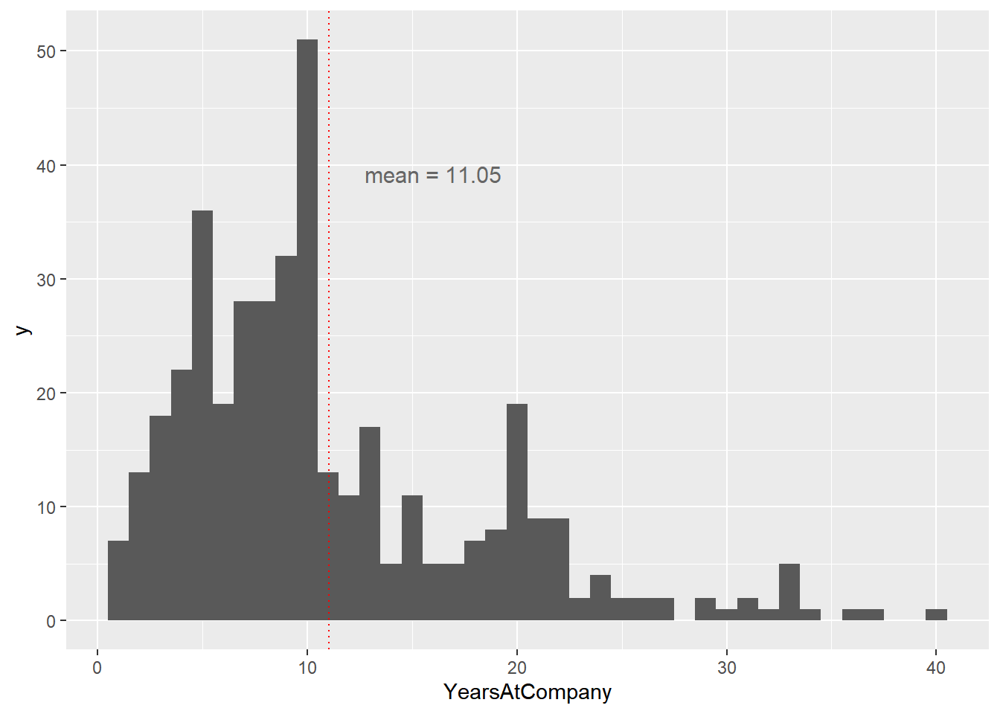
The weighted sample mean is around 11, which is higher than the population mean of around 7. The fact that the two numbers are different means that the weighted simple random sample is biased.
16.2.3 Cluster sampling
Stratified sampling vs. cluster sampling
The main benefit of cluster sampling over stratified sampling is that you can save time or money by not including every subgroup in your sample.
Stratified sampling
Split the population into subgroups
Use simple random sampling on every subgroup
Cluster sampling
Use simple random sampling to pick some subgroups
- Stage 1: sampling for subgroups
Use simple random sampling on only those subgroups
- Stage 2: sampling each group
Multistage sampling
Cluster sampling is a type of multistage sampling.
You can have > 2 stages.
- e.g, Countrywide surveys may sample states, counties, cities, and neighborhoods.
16.2.3.1 Performing cluster sampling
You’ll explore the JobRole column of the attrition dataset. You can think of each job role as a subgroup of the whole population of employees.
# Get unique JobRole values
job_roles_pop <- unique(attrition_pop$JobRole)
# Randomly sample four JobRole values
job_roles_samp <- sample(job_roles_pop, size = 4)
# See the result
job_roles_samp## [1] Sales_Representative Human_Resources Manufacturing_Director
## [4] Manager
## 9 Levels: Healthcare_Representative Human_Resources ... Sales_Representative# Filter for rows where JobRole is in job_roles_samp
attrition_filtered <- attrition_pop %>%
filter(JobRole %in% job_roles_samp)
# Randomly sample 10 employees from each sampled job role
attrition_clus <- attrition_filtered %>%
group_by(JobRole) %>%
slice_sample(n = 10) %>%
ungroup()
# See the result
str(attrition_clus)## tibble [40 × 31] (S3: tbl_df/tbl/data.frame)
## $ Age : int [1:40] 31 38 59 34 54 29 35 44 34 37 ...
## $ Attrition : Factor w/ 2 levels "No","Yes": 1 1 1 1 1 1 1 1 1 2 ...
## $ BusinessTravel : Factor w/ 3 levels "Non-Travel","Travel_Frequently",..: 3 3 3 2 3 3 3 3 3 3 ...
## $ DailyRate : int [1:40] 1398 433 818 648 397 352 528 528 829 807 ...
## $ Department : Factor w/ 3 levels "Human_Resources",..: 1 1 1 1 1 1 1 1 1 1 ...
## $ DistanceFromHome : int [1:40] 8 1 6 11 19 6 8 1 3 6 ...
## $ Education : Ord.factor w/ 5 levels "Below_College"<..: 2 3 2 3 4 1 4 3 2 4 ...
## $ EducationField : Factor w/ 6 levels "Human_Resources",..: 4 1 4 2 4 4 6 2 1 1 ...
## $ EnvironmentSatisfaction : Ord.factor w/ 4 levels "Low"<"Medium"<..: 4 3 2 3 3 4 3 3 3 3 ...
## $ Gender : Factor w/ 2 levels "Female","Male": 1 2 2 2 2 2 2 1 2 2 ...
## $ HourlyRate : int [1:40] 96 37 52 56 88 87 100 44 88 63 ...
## $ JobInvolvement : Ord.factor w/ 4 levels "Low"<"Medium"<..: 4 4 3 2 3 2 3 3 3 3 ...
## $ JobLevel : int [1:40] 1 1 1 2 3 1 1 1 1 1 ...
## $ JobRole : Factor w/ 9 levels "Healthcare_Representative",..: 2 2 2 2 2 2 2 2 2 2 ...
## $ JobSatisfaction : Ord.factor w/ 4 levels "Low"<"Medium"<..: 2 3 3 2 2 2 3 4 4 1 ...
## $ MaritalStatus : Factor w/ 3 levels "Divorced","Married",..: 3 2 2 2 2 2 3 1 2 1 ...
## $ MonthlyIncome : int [1:40] 2109 2844 2267 4490 10725 2804 4323 3195 3737 2073 ...
## $ MonthlyRate : int [1:40] 24609 6004 25657 21833 6729 15434 7108 4167 2243 23648 ...
## $ NumCompaniesWorked : int [1:40] 9 1 8 4 2 1 1 4 0 4 ...
## $ OverTime : Factor w/ 2 levels "No","Yes": 1 1 1 1 1 1 1 2 1 2 ...
## $ PercentSalaryHike : int [1:40] 18 13 17 11 15 11 17 18 19 22 ...
## $ PerformanceRating : Ord.factor w/ 4 levels "Low"<"Good"<"Excellent"<..: 3 3 3 3 3 3 3 3 3 4 ...
## $ RelationshipSatisfaction: Ord.factor w/ 4 levels "Low"<"Medium"<..: 4 4 4 4 3 4 2 1 3 4 ...
## $ StockOptionLevel : int [1:40] 0 1 0 2 1 0 0 3 1 0 ...
## $ TotalWorkingYears : int [1:40] 8 7 7 14 16 1 6 8 4 7 ...
## $ TrainingTimesLastYear : int [1:40] 3 2 2 5 1 3 2 2 1 3 ...
## $ WorkLifeBalance : Ord.factor w/ 4 levels "Bad"<"Good"<"Better"<..: 3 4 2 4 4 3 1 3 1 3 ...
## $ YearsAtCompany : int [1:40] 3 7 2 10 9 1 5 2 3 3 ...
## $ YearsInCurrentRole : int [1:40] 2 6 2 9 7 0 4 2 2 2 ...
## $ YearsSinceLastPromotion : int [1:40] 0 5 2 1 7 0 1 2 0 0 ...
## $ YearsWithCurrManager : int [1:40] 2 0 2 8 1 0 4 2 2 2 ...The two-stage sampling technique gives you control over sampling both between subgroups and within subgroups.
16.2.4 Comparing sampling methods
16.2.4.1 3 kinds of sampling
Let’s compare the performance of point estimates using simple, stratified, and cluster sampling. Before we do that, you’ll have to set up the samples.
In these exercises, we’ll use the RelationshipSatisfaction column of the attrition dataset, which categorizes the employee’s relationship with the company.
# simple random sampling
# Perform simple random sampling to get 0.25 of the population
attrition_srs <- attrition_pop %>%
slice_sample(prop = 0.25)
# stratified sampling
# Perform stratified sampling to get 0.25 of each relationship group
attrition_strat <- attrition_pop %>%
group_by(RelationshipSatisfaction) %>%
slice_sample(prop = 0.25) %>%
ungroup()
# cluster sampling
# Get unique values of RelationshipSatisfaction
satisfaction_unique <- unique(attrition_pop$RelationshipSatisfaction)
# Randomly sample for 2 of the unique satisfaction values
satisfaction_samp <- sample(satisfaction_unique, size = 2)
# Perform cluster sampling on the selected group getting 0.25 (one quarter) of the population
attrition_clust <- attrition_pop %>%
filter(RelationshipSatisfaction %in% satisfaction_samp) %>%
group_by(RelationshipSatisfaction) %>%
slice_sample(n = round(nrow(attrition_pop) / 4)) %>%
ungroup()16.2.4.2 Summary statistics on different sample
Now you have three types of sample (simple, stratified, cluster), you can compare point estimates from each sample to the population parameter. That is, you can calculate the same summary statistic on each sample and see how it compares to the summary statistic for the population.
Here, we’ll look at how satisfaction with the company affects whether or not the employee leaves the company. That is, you’ll calculate the proportion of employees who left the company (they have an Attrition value of "Yes"), for each value of RelationshipSatisfaction.
# Use the whole population dataset
mean_attrition_pop <- attrition_pop %>%
# Group by relationship satisfaction level
group_by(RelationshipSatisfaction) %>%
# Calculate the proportion of employee attrition
summarise(mean_attrition = mean(Attrition == "Yes"))
# See the result
mean_attrition_pop## # A tibble: 4 × 2
## RelationshipSatisfaction mean_attrition
## <ord> <dbl>
## 1 Low 0.207
## 2 Medium 0.149
## 3 High 0.155
## 4 Very_High 0.148# Calculate the same thing for the simple random sample
mean_attrition_srs <- attrition_srs %>%
group_by(RelationshipSatisfaction) %>%
summarise(mean_attrition = mean(Attrition == "Yes"))
# See the result
mean_attrition_srs## # A tibble: 4 × 2
## RelationshipSatisfaction mean_attrition
## <ord> <dbl>
## 1 Low 0.167
## 2 Medium 0.147
## 3 High 0.202
## 4 Very_High 0.159# Calculate the same thing for the stratified sample
mean_attrition_strat <- attrition_strat %>%
group_by(RelationshipSatisfaction) %>%
summarise(mean_attrition = mean(Attrition == "Yes"))
# See the result
mean_attrition_strat## # A tibble: 4 × 2
## RelationshipSatisfaction mean_attrition
## <ord> <dbl>
## 1 Low 0.130
## 2 Medium 0.12
## 3 High 0.114
## 4 Very_High 0.157# Calculate the same thing for the cluster sample
mean_attrition_clust <- attrition_clust %>%
group_by(RelationshipSatisfaction) %>%
summarise(mean_attrition = mean(Attrition == "Yes"))
# See the result
mean_attrition_clust## # A tibble: 2 × 2
## RelationshipSatisfaction mean_attrition
## <ord> <dbl>
## 1 Low 0.207
## 2 High 0.152The numbers are all fairly similar, with the notable exception that cluster sampling only gives results for the clusters included in the sample.
16.3 Sampling Distributions
16.3.1 Relative error of point estimates
16.3.1.1 Relative errors
The size of the sample you take affects how accurately the point estimates reflect the corresponding population parameter. For example, when you calculate a sample mean, you want it to be close to the population mean. However, if your sample is too small, this might not be the case.
The most common metric for assessing accuracy is relative error. This is the absolute difference between the population parameter and the point estimate, all divided by the population parameter. It is sometimes expressed as a percentage.
100 * abs(population_mean - sample_mean) / population_mean# Population mean
mean_attrition_pop <- attrition_pop %>%
summarise(mean_attrition = mean(Attrition == "Yes")); mean_attrition_pop## mean_attrition
## 1 0.161When sample size is 10.
# Generate a simple random sample of 10 rows
attrition_srs10 <- slice_sample(attrition_pop, n = 10)
# Calculate the proportion of employee attrition in the sample
mean_attrition_srs10 <- attrition_srs10 %>%
summarise(mean_attrition = mean(Attrition == "Yes"))
# Calculate the relative error percentage
rel_error_pct10 <- abs(mean_attrition_pop - mean_attrition_srs10) / mean_attrition_pop * 100
# See the result
rel_error_pct10## mean_attrition
## 1 38When sample size is 100.
# Calculate the relative error percentage again with a sample of 100 rows
mean_attrition_srs100 <- attrition_pop %>%
slice_sample(n = 100) %>%
summarise(mean_attrition = mean(Attrition == "Yes"))
rel_error_pct100 <- abs(mean_attrition_pop - mean_attrition_srs100) / mean_attrition_pop * 100
# See the result
rel_error_pct100## mean_attrition
## 1 19.4As you increase the sample size, on average the sample mean gets closer to the population mean and the relative error decreases.
16.3.1.2 Relative error vs. sample size
Here’s a scatter plot of relative error versus sample size, with a smooth trend line calculated using the LOESS method.

The relative error decreases as the sample size increases.
As you increase sample size, the relative error decreases quickly at first, then more slowly as it drops to zero.
16.3.2 Creating a sampling distribution
A sampling distribution is a distribution of several replicates of point estimates.
Base-R’s replicate function let’s you run the same code multiple times. It’s especially useful for situations like this where the result contains some randomness.
replicate(
n = 1000,
expr = data %>%
slice_sample(n = 30) %>%
summarize(mean_points = mean(total_points)) %>%
pull(mean_points)
)The first argument,
n: is the number of times to run the code,The second argument,
expr: is the code to run.
Each time the code is run, we get one sample mean, so running the code a thousand times gives us a vector of a thousand sample means.
16.3.2.1 Replicating samples
When you calculate a point estimate such as a sample mean, the value you calculate depends on the rows that were included in the sample. That means that there is some randomness in the answer.
In order to quantify the variation caused by this randomness, you can create many samples and calculate the sample mean (or other statistic) for each sample.
# Replicate this code 500 times
mean_attritions <- replicate(
n = 500,
expr = attrition_pop %>%
slice_sample(n = 20) %>%
summarize(mean_attrition = mean(Attrition == "Yes")) %>%
pull(mean_attrition)
)
# See the result
str(mean_attritions)## num [1:500] 0.25 0.15 0.15 0.15 0.15 0.15 0.2 0.25 0.2 0.2 ...# Store mean_attritions in a tibble in a column named sample_mean
sample_means <- tibble(sample_mean = mean_attritions)
# Plot a histogram of the `sample_mean` column, binwidth 0.05
ggplot(sample_means, aes(x = sample_mean)) +
geom_histogram(binwidth = 0.05)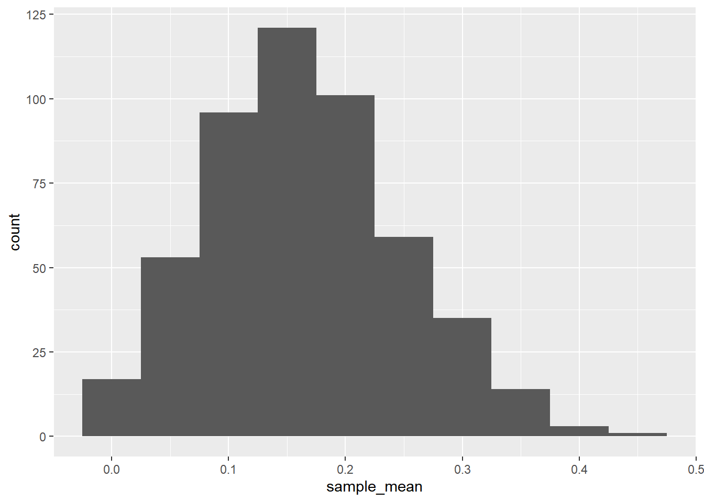
By generating the sample statistic many times with different samples, you can quantify the amount of variation in those statistics.
As sample size increases, on average each sample mean has a lower relative error compared to the population mean, thus reducing the range of the distribution.
16.3.3 Approximate sampling distributions
16.3.3.1 Exact sampling distribution
The distribution of a sample statistic is called the sampling distribution. When we can calculate this exactly, rather than using an approximation, it is known as the exact sampling distribution.
Let’s take another look at the sampling distribution of dice rolls. This time, we’ll look at five eight-sided dice.
# Expand a grid representing 5 8-sided dice
dice <- expand_grid(
die1 = 1:8,
die2 = 1:8,
die3 = 1:8,
die4 = 1:8,
die5 = 1:8
)
# See the result
dice## # A tibble: 32,768 × 5
## die1 die2 die3 die4 die5
## <int> <int> <int> <int> <int>
## 1 1 1 1 1 1
## 2 1 1 1 1 2
## 3 1 1 1 1 3
## 4 1 1 1 1 4
## 5 1 1 1 1 5
## 6 1 1 1 1 6
## 7 1 1 1 1 7
## 8 1 1 1 1 8
## 9 1 1 1 2 1
## 10 1 1 1 2 2
## # ℹ 32,758 more rowsAdd a column, mean_roll, to dice, that contains the mean of the five rolls.
dice <- dice %>%
# Add a column of mean rolls
mutate(mean_roll = rowSums(.)/ncol(.))
dice## # A tibble: 32,768 × 6
## die1 die2 die3 die4 die5 mean_roll
## <int> <int> <int> <int> <int> <dbl>
## 1 1 1 1 1 1 1
## 2 1 1 1 1 2 1.2
## 3 1 1 1 1 3 1.4
## 4 1 1 1 1 4 1.6
## 5 1 1 1 1 5 1.8
## 6 1 1 1 1 6 2
## 7 1 1 1 1 7 2.2
## 8 1 1 1 1 8 2.4
## 9 1 1 1 2 1 1.2
## 10 1 1 1 2 2 1.4
## # ℹ 32,758 more rows# Using dice, draw a bar plot of mean_roll as a factor
ggplot(dice, aes(x = factor(mean_roll))) +
geom_bar() +
theme(axis.text.x = element_text(angle = 70, vjust = 0.8, hjust = 1))
The exact sampling distribution shows all possible variations of the point estimate that you are interested in.
16.3.3.2 Approximate sampling distribution
Calculating the exact sampling distribution is only possible in very simple situations. With just five eight-sided dice, the number of possible rolls is 8 ^ 5, which is over thirty thousand.
When the dataset is more complicated, for example where a variable has hundreds or thousands or categories, the number of possible outcomes becomes too difficult to compute exactly.
In this situation, you can calculate an approximate sampling distribution by simulating the exact sampling distribution. That is, you can repeat a procedure over and over again to simulate both the sampling process and the sample statistic calculation process.
# Sample one to eight, five times, with replacement
five_rolls <- sample(1:8, size = 5, replace = TRUE)
# Calculate the mean of five_rolls
mean(five_rolls)## [1] 5.2Replicate the sampling code 1000 times.
The code to generate each sample mean was two lines, so we have to wrap the expr argument to replicate in {}, like in a for loop or a function body.
# Replicate the sampling code 1000 times
sample_means_1000 <- replicate(
n = 1000,
expr = {
five_rolls <- sample(1:8, size = 5, replace = TRUE)
mean(five_rolls)
}
)
# See the result
str(sample_means_1000)## num [1:1000] 4.6 4.4 5.4 5.8 2.2 4.8 5.6 4.6 6.8 3.6 ...# Wrap sample_means_1000 in the sample_mean column of a tibble
sample_means <- tibble(sample_mean = sample_means_1000)
# See the result
sample_means## # A tibble: 1,000 × 1
## sample_mean
## <dbl>
## 1 4.6
## 2 4.4
## 3 5.4
## 4 5.8
## 5 2.2
## 6 4.8
## 7 5.6
## 8 4.6
## 9 6.8
## 10 3.6
## # ℹ 990 more rows# Using sample_means, draw a bar plot of sample_mean as a factor
ggplot(sample_means, aes(x = factor(sample_mean))) +
geom_bar() +
theme(axis.text.x = element_text(angle = 70, vjust = 0.8, hjust = 1))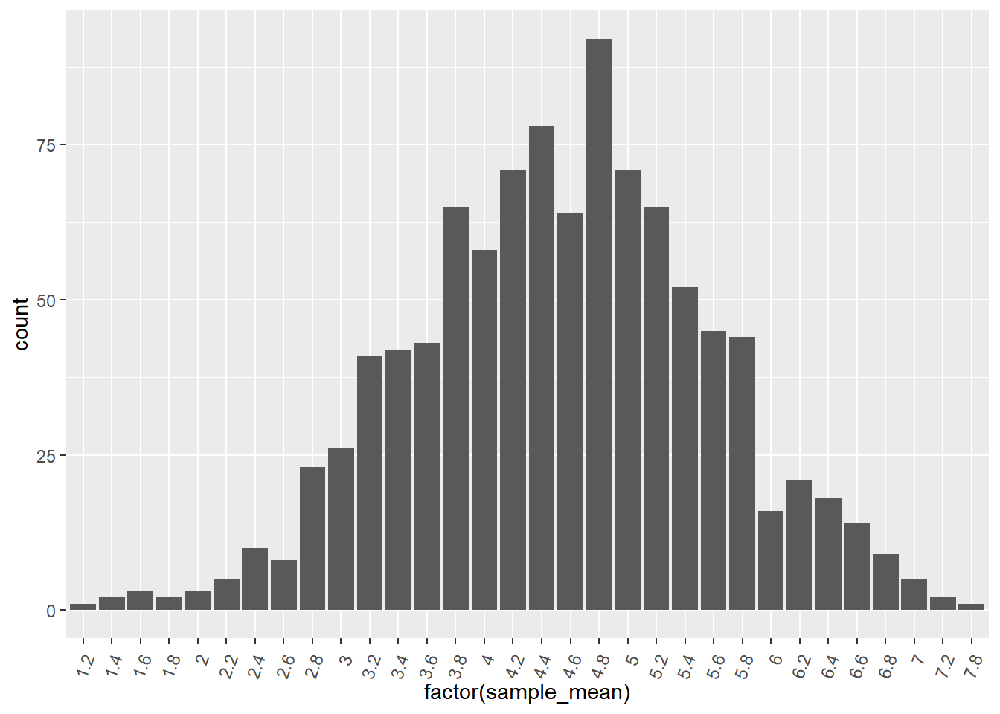
Once your dataset gets sufficiently big, exact sampling distributions cannot be calculated, so an approximate sampling distribution has to be used. Notice that the histogram is close to but not exactly the same as the histogram from the previous exercise.
16.3.4 Standard errors & CLT
Consequences of the central limit theorem
Averages of independent samples have approximately normal distributions.
As the sample size increases,
the distribution of the averages gets closer to being normally distributed
the width of the sampling distribution gets narrower.
16.3.4.1 Population & sampling distribution means
Here, we’ll look at the relationship between the mean of the sampling distribution and the population parameter that the sampling is supposed to estimate.
Three sampling distributions are provided. In each case, the employee attrition dataset was sampled using simple random sampling, then the mean attrition was calculated. This was done 1000 times to get a sampling distribution of mean attritions. One sampling distribution used a sample size of 5 for each replicate, one used 50, and one used 500.
# function
sampling_distribution_fun <- function(sample_size) {
replicate(
n = 1000,
expr = attrition_pop %>%
slice_sample(n = sample_size) %>%
summarise(mean_attrition = mean(Attrition == "Yes")) %>%
pull(mean_attrition)
) %>%
tibble(mean_attrition = .)
}
# sample size = 5
sampling_distribution_5 <- sampling_distribution_fun(5)
sampling_distribution_5## # A tibble: 1,000 × 1
## mean_attrition
## <dbl>
## 1 0
## 2 0
## 3 0
## 4 0
## 5 0
## 6 0.4
## 7 0.2
## 8 0.2
## 9 0
## 10 0.4
## # ℹ 990 more rows# sample size = 50
sampling_distribution_50 <- sampling_distribution_fun(50)
sampling_distribution_50## # A tibble: 1,000 × 1
## mean_attrition
## <dbl>
## 1 0.24
## 2 0.1
## 3 0.1
## 4 0.26
## 5 0.1
## 6 0.16
## 7 0.2
## 8 0.2
## 9 0.16
## 10 0.08
## # ℹ 990 more rowssampling_distribution_500 <- sampling_distribution_fun(500)
sampling_distribution_500## # A tibble: 1,000 × 1
## mean_attrition
## <dbl>
## 1 0.152
## 2 0.2
## 3 0.15
## 4 0.15
## 5 0.172
## 6 0.182
## 7 0.152
## 8 0.152
## 9 0.176
## 10 0.166
## # ℹ 990 more rowsCalculate a mean of sample means.
# Calculate the mean across replicates of the mean attritions in sampling_distribution_5
mean_of_means_5 <- sampling_distribution_5 %>%
summarise(mean_mean_attrition_5 = mean(mean_attrition))
# Do the same for sampling_distribution_50
mean_of_means_50 <- sampling_distribution_50 %>%
summarise(mean_mean_attrition_50 = mean(mean_attrition))
# ... and for sampling_distribution_500
mean_of_means_500 <- sampling_distribution_500 %>%
summarise(mean_mean_attrition_500 = mean(mean_attrition))
# See the results
cbind(mean_of_means_5, mean_of_means_50, mean_of_means_500)## mean_mean_attrition_5 mean_mean_attrition_50 mean_mean_attrition_500
## 1 0.16 0.165 0.162Regardless of sample size, the mean of the sampling distribution is a close approximation to the population mean.
# For comparison: the mean attrition in the population
attrition_pop %>%
summarize(mean_attrition = mean(Attrition == "Yes"))## mean_attrition
## 1 0.16116.3.4.2 Population and sampling distribution variation
Similarly, as a result of the central limit theorem, the standard deviation of the sampling distribution has an interesting relationship with the population parameter’s standard deviation and the sample size.
Calculate standard deviation of sample means.
# Calculate the standard deviation across replicates of the mean attritions in sampling_distribution_5
sd_of_means_5 <- sampling_distribution_5 %>%
summarise(sd_mean_attrition_5 = sd(mean_attrition))
# Do the same for sampling_distribution_50
sd_of_means_50 <- sampling_distribution_50 %>%
summarise(sd_mean_attrition_50 = sd(mean_attrition))
# ... and for sampling_distribution_500
sd_of_means_500 <- sampling_distribution_500 %>%
summarise(sd_mean_attrition_500 = sd(mean_attrition))
# See the results
cbind(sd_of_means_5, sd_of_means_50, sd_of_means_500)## sd_mean_attrition_5 sd_mean_attrition_50 sd_mean_attrition_500
## 1 0.166 0.0512 0.0136The standard deviation of the sampling distribution is approximately equal to the population standard deviation divided by the square root of the sample size.
# For comparison: population standard deviation
sd_attrition_pop <- attrition_pop %>%
summarize(sd_attrition = sd(Attrition == "Yes")) %>%
pull(sd_attrition)
# The sample sizes of each sampling distribution
sample_sizes <- c(5, 50, 500)
# create compare df
Std_sample_mean <- c(pull(sd_of_means_5), pull(sd_of_means_50), pull(sd_of_means_500))
data.frame(sample_sizes, Std_sample_mean) %>%
mutate(Pop_mean_over_sqrt_sample_size = sd_attrition_pop / sqrt(sample_sizes))## sample_sizes Std_sample_mean Pop_mean_over_sqrt_sample_size
## 1 5 0.1665 0.1645
## 2 50 0.0512 0.0520
## 3 500 0.0136 0.016516.4 Bootstrap Distributions
16.4.1 Introduction to bootstrapping
Bootstrapping treats your dataset as a sample and uses it to build up a theoretical population.
Bootstrapping process
Make a resample of the same size as the original sample.
Calculate the statistic of interest for this bootstrap sample.
Repeat steps 1 and 2 many times.
The resulting statistics are called bootstrap statistics and when viewed to see their variability a bootstrap distribution.
With or without replacement
The key to deciding whether to sample without or with replacement is whether or not your dataset is best thought of as being the whole population or not.
If dataset = whole population ⟶ with replacement
If dataset ≠ whole population ⟶ without replacement
16.4.1.1 Generating a bootstrap distribution
To make a bootstrap distribution, you start with a sample and sample that with replacement. After that, the steps are the same: calculate the summary statistic that you are interested in on that sample/resample, then replicate the process many times.
Here, spotify_sample is a subset of the spotify_population dataset.
spotify_sample <- spotify_population %>%
select(artists, name, danceability) %>%
slice_sample(n = 1000)
glimpse(spotify_sample)## Rows: 1,000
## Columns: 3
## $ artists <chr> "['Kirk Franklin']", "['Noah Kahan']", "['Kenny Chesney']…
## $ name <chr> "He Reigns / Awesome God", "False Confidence", "Key’s in …
## $ danceability <dbl> 0.772, 0.414, 0.834, 0.758, 0.514, 0.269, 0.714, 0.409, 0…Step 1: Generate a single bootstrap resample from spotify_sample.
# Generate 1 bootstrap resample
spotify_1_resample <- spotify_sample %>%
slice_sample(prop = 1, replace = TRUE)
# See the result
glimpse(spotify_1_resample)## Rows: 1,000
## Columns: 3
## $ artists <chr> "['Sylvan Esso']", "['Aminé']", "['Zach Williams', 'Dolly…
## $ name <chr> "Coffee", "Spice Girl", "There Was Jesus", "Corrido De El…
## $ danceability <dbl> 0.457, 0.693, 0.496, 0.524, 0.645, 0.312, 0.593, 0.426, 0…Step 2: Summarize to calculate the mean danceability of spotify_1_resample.
# Calculate mean danceability of resample
mean_danceability_1 <- spotify_1_resample %>%
summarise(mean_danceability = mean(danceability)) %>%
pull(mean_danceability)
# See the result
mean_danceability_1## [1] 0.588Replicate the expression provided 1000 times.
# Step 3
# Replicate this 1000 times
mean_danceability_1000 <- replicate(
n = 1000,
expr = {
# Step 1
spotify_1_resample <- spotify_sample %>%
slice_sample(prop = 1, replace = TRUE)
# Step 2
spotify_1_resample %>%
summarize(mean_danceability = mean(danceability)) %>%
pull(mean_danceability)
}
)
# See the result
str(mean_danceability_1000)## num [1:1000] 0.586 0.589 0.58 0.588 0.59 ...Draw a histogram.
# Store the resamples in a tibble
bootstrap_distn <- tibble(
resample_mean = mean_danceability_1000
)
# Draw a histogram of the resample means with binwidth 0.002
ggplot(bootstrap_distn, aes(resample_mean)) +
geom_histogram(binwidth = 0.002)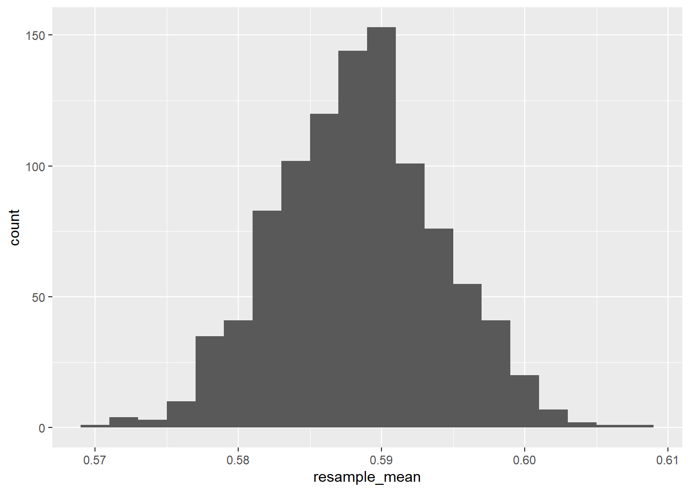
16.4.2 Comparing sampling & bootstrap distributions
Sample, bootstrap distribution, population means
The bootstrap distribution mean is usually almost identical to the sample mean.
It may not be a good estimate of the population mean.
Bootstrapping cannot correct biases due to differences between your sample and the population.
Sample, bootstrap distribution, population stds
Standard error is the standard deviation of the statistic of interest.
Standard error * square root of sample size, estimates the population standard deviation.
Estimated standard error is the standard deviation of the bootstrap distribution for a sample statistic.
The bootstrap distribution standard error times the square root of the sample size estimates the standard deviation in the population.
16.4.2.1 Sampling distribution vs. bootstrap distribution
Here, the statistic you are interested in is the mean popularity score of the songs.
spotify_sample <- spotify_population %>%
slice_sample(n = 500)
glimpse(spotify_sample)## Rows: 500
## Columns: 20
## $ acousticness <dbl> 0.025000, 0.086800, 0.008350, 0.004530, 0.263000, 0.3…
## $ artists <chr> "['MadeinTYO', 'Travis Scott']", "['Randy Rogers Band…
## $ danceability <dbl> 0.782, 0.522, 0.872, 0.495, 0.697, 0.553, 0.838, 0.83…
## $ duration_ms <dbl> 181104, 290853, 280627, 239894, 296107, 210200, 29314…
## $ duration_minutes <dbl> 3.02, 4.85, 4.68, 4.00, 4.94, 3.50, 4.89, 3.71, 3.90,…
## $ energy <dbl> 0.662, 0.824, 0.651, 0.894, 0.445, 0.506, 0.635, 0.85…
## $ explicit <dbl> 1, 0, 0, 0, 0, 0, 0, 1, 0, 0, 0, 0, 0, 1, 0, 1, 1, 1,…
## $ id <chr> "79wTHFxVJXRrR5afZeBd16", "50mclsKBXwBuOmMGZMtgc7", "…
## $ instrumentalness <dbl> 0.00000000, 0.00005150, 0.00000000, 0.00059600, 0.002…
## $ key <dbl> 1, 7, 7, 2, 5, 0, 5, 1, 2, 2, 7, 7, 8, 10, 1, 10, 6, …
## $ liveness <dbl> 0.3000, 0.2920, 0.0694, 0.1030, 0.1330, 0.7630, 0.060…
## $ loudness <dbl> -7.24, -6.03, -5.68, -4.81, -7.08, -5.97, -6.55, -3.6…
## $ mode <dbl> 1, 1, 1, 0, 1, 1, 0, 1, 0, 0, 1, 0, 0, 0, 1, 0, 0, 0,…
## $ name <chr> "Uber Everywhere (feat. Travis Scott)", "Tonight's No…
## $ popularity <dbl> 59, 41, 36, 66, 55, 60, 60, 41, 61, 49, 44, 41, 46, 5…
## $ release_date <chr> "2016-08-19", "2004-08-24", "2004-01-01", "2013-01-01…
## $ speechiness <dbl> 0.1050, 0.0340, 0.1000, 0.0441, 0.0638, 0.0411, 0.032…
## $ tempo <dbl> 140.1, 121.7, 162.0, 126.0, 119.9, 130.0, 130.1, 91.5…
## $ valence <dbl> 0.102, 0.562, 0.732, 0.213, 0.396, 0.306, 0.948, 0.66…
## $ year <dbl> 2016, 2004, 2004, 2013, 2001, 2018, 2005, 2003, 2013,…Generate a sampling distribution of 2000 replicates. Sample 500 rows of the population without replacement.
# Generate a sampling distribution
mean_popularity_2000_samp <- replicate(
# Use 2000 replicates
n = 2000,
expr = {
# Start with the population
spotify_population %>%
# Sample 500 rows without replacement
slice_sample(n = 500, replace = FALSE) %>%
# Calculate the mean popularity as mean_popularity
summarise(mean_popularity = mean(popularity)) %>%
# Pull out the mean popularity
pull(mean_popularity)
}
)
# See the result
str(mean_popularity_2000_samp)## num [1:2000] 54.6 53.6 55 55.5 54 ...Generate a bootstrap distribution of 2000 replicates. Sample 500 rows of the sample with replacement.
# Generate a bootstrap distribution
mean_popularity_2000_boot <- replicate(
# Use 2000 replicates
n = 2000,
expr = {
# Start with the sample
spotify_sample %>%
# Sample same number of rows with replacement
slice_sample(prop = 1, replace = TRUE) %>%
# Calculate the mean popularity
summarise(mean_popularity = mean(popularity)) %>%
# Pull out the mean popularity
pull(mean_popularity)
}
)
# See the result
str(mean_popularity_2000_boot)## num [1:2000] 54.9 55.2 55.2 55 55.3 ...16.4.2.2 Compare sampling and bootstrap means
# create tibble to compare
sampling_distribution <- tibble(sample_mean = mean_popularity_2000_samp)
bootstrap_distribution <- tibble(resample_mean = mean_popularity_2000_boot)
sampling_distribution## # A tibble: 2,000 × 1
## sample_mean
## <dbl>
## 1 54.6
## 2 53.6
## 3 55.0
## 4 55.5
## 5 54.0
## 6 55.4
## 7 54.9
## 8 55.0
## 9 54.4
## 10 54.9
## # ℹ 1,990 more rowsbootstrap_distribution## # A tibble: 2,000 × 1
## resample_mean
## <dbl>
## 1 54.9
## 2 55.2
## 3 55.2
## 4 55.0
## 5 55.3
## 6 55.5
## 7 54.6
## 8 54.3
## 9 55.1
## 10 55.7
## # ℹ 1,990 more rowsCalculate the mean popularity with summarize() in 4 ways.
Population: from
spotify_population, take the mean ofpopularity.Sample: from
spotify_sample, take the mean ofpopularity.Sampling distribution: from
sampling_distribution, take the mean ofsample_mean.Bootstrap distribution: from
bootstrap_distribution, take the mean ofresample_mean.
# Calculate the true population mean popularity
pop_mean <- spotify_population %>% summarise(mean = mean(popularity))
# Calculate the original sample mean popularity
samp_mean <- spotify_sample %>% summarise(mean = mean(popularity))
# Calculate the sampling dist'n estimate of mean popularity
samp_distn_mean <- sampling_distribution %>% summarise(mean = mean(sample_mean))
# Calculate the bootstrap dist'n estimate of mean popularity
boot_distn_mean <- bootstrap_distribution %>% summarise(mean = mean(resample_mean))
# See the results
c(pop = pop_mean, samp = samp_mean, sam_distn = samp_distn_mean, boot_distn = boot_distn_mean)## $pop.mean
## [1] 54.8
##
## $samp.mean
## [1] 55
##
## $sam_distn.mean
## [1] 54.8
##
## $boot_distn.mean
## [1] 55The sampling distribution mean (54.82882) is the best estimate of the true population mean (54.83714);
The bootstrap distribution mean (54.71672) is closest to the original sample mean (54.706).
The sampling distribution mean can be used to estimate the population mean, but that is not the case with the boostrap distribution.
16.4.2.3 Compare sampling and bootstrap std
# Calculate the true popluation std dev popularity
pop_sd <- spotify_population %>% summarise(sd = sd(popularity))
# Calculate the true sample std dev popularity
samp_sd <- spotify_sample %>% summarise(sd = sd(popularity))
# Calculate the sampling dist'n estimate of std dev popularity
samp_distn_sd <- sampling_distribution %>% summarise(sd = sd(sample_mean) * sqrt(500))
# Calculate the bootstrap dist'n estimate of std dev popularity
boot_distn_sd <- bootstrap_distribution %>% summarise(sd = sd(resample_mean) * sqrt(500))
# See the results
c(pop = pop_sd, samp = samp_sd, sam_distn = samp_distn_sd, boot_distn = boot_distn_sd)## $pop.sd
## [1] 10.9
##
## $samp.sd
## [1] 10.5
##
## $sam_distn.sd
## [1] 10.6
##
## $boot_distn.sd
## [1] 10.4When you don’t know have all the values from the true population, you can use bootstrapping to get a good estimate of the population standard deviation. (Although it isn’t the closest of the values given)
16.4.3 Confidence intervals
Confidence intervals account for uncertainty in our estimate of a population parameter by providing a range of possible values. We are confident that the true value lies somewhere in the interval specified by that range.
16.4.3.1 Calculating confidence intervals
Mean plus or minus one standard deviation
Quantile method for confidence intervals

Standard error method for confidence interval
- Inverse cumulative distribution function:
qnorm()
- Inverse cumulative distribution function:
Generate a 95% confidence interval using the quantile method.
- Summarize to get the
0.025quantile aslower, and the0.975quantile asupper.
- Summarize to get the
# Generate a 95% confidence interval using the quantile method
conf_int_quantile <- bootstrap_distribution %>%
summarise(
lower = quantile(resample_mean, 0.025),
upper = quantile(resample_mean, 0.975)
)
# See the result
conf_int_quantile## # A tibble: 1 × 2
## lower upper
## <dbl> <dbl>
## 1 54.1 55.9Generate a 95% confidence interval using the standard error method.
Calculate
point_estimateas the mean ofresample_mean, andstandard_erroras the standard deviation ofresample_mean.Calculate
loweras the0.025quantile of an inv. CDF from a normal distribution with meanpoint_estimateand standard deviationstandard_error.Calculate
upperas the0.975quantile of that same inv. CDF.
# Generate a 95% confidence interval using the std error method
conf_int_std_error <- bootstrap_distribution %>%
summarise(
point_estimate = mean(resample_mean),
standard_error = sd(resample_mean),
lower = qnorm(p = 0.025, mean = point_estimate, sd = standard_error),
upper = qnorm(p = 0.975, mean = point_estimate, sd = standard_error)
)
# See the result
conf_int_std_error## # A tibble: 1 × 4
## point_estimate standard_error lower upper
## <dbl> <dbl> <dbl> <dbl>
## 1 55.0 0.465 54.1 55.9The standard error method for calculating the confidence interval assumes that the bootstrap distribution is normal. This assumption should hold if the sample size and number of replicates are sufficiently large.